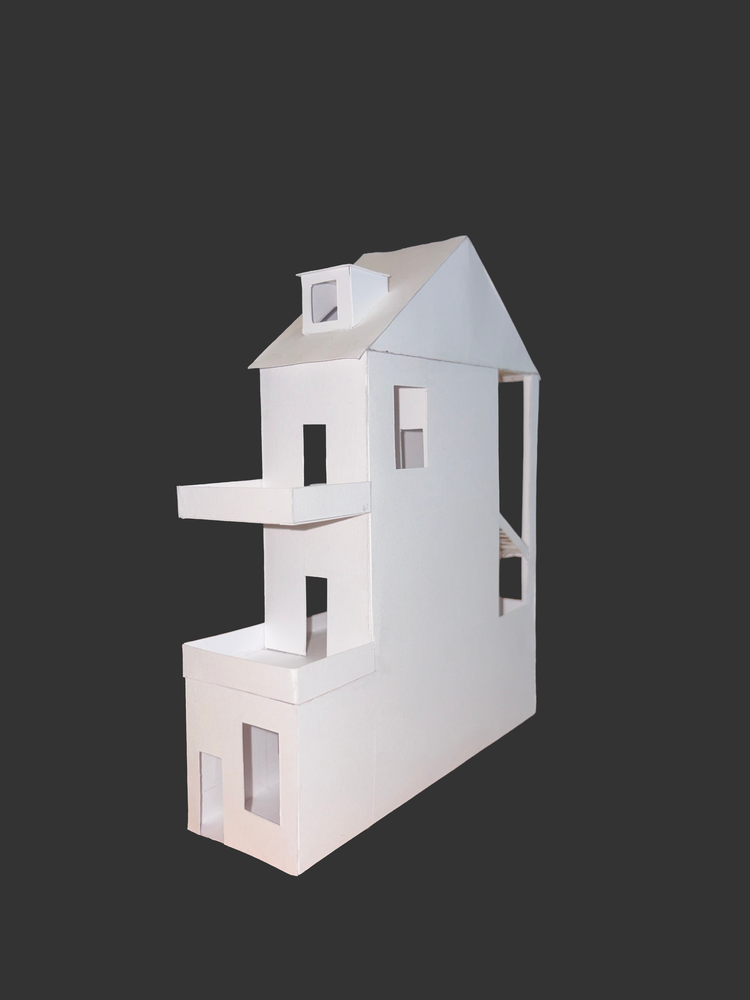
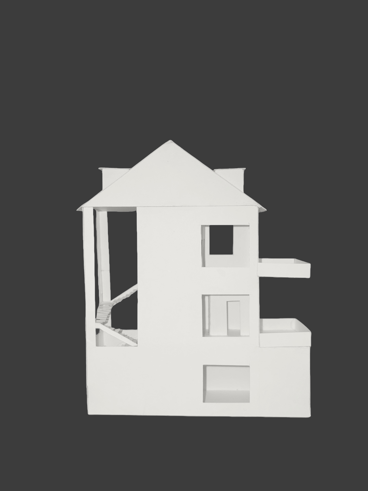
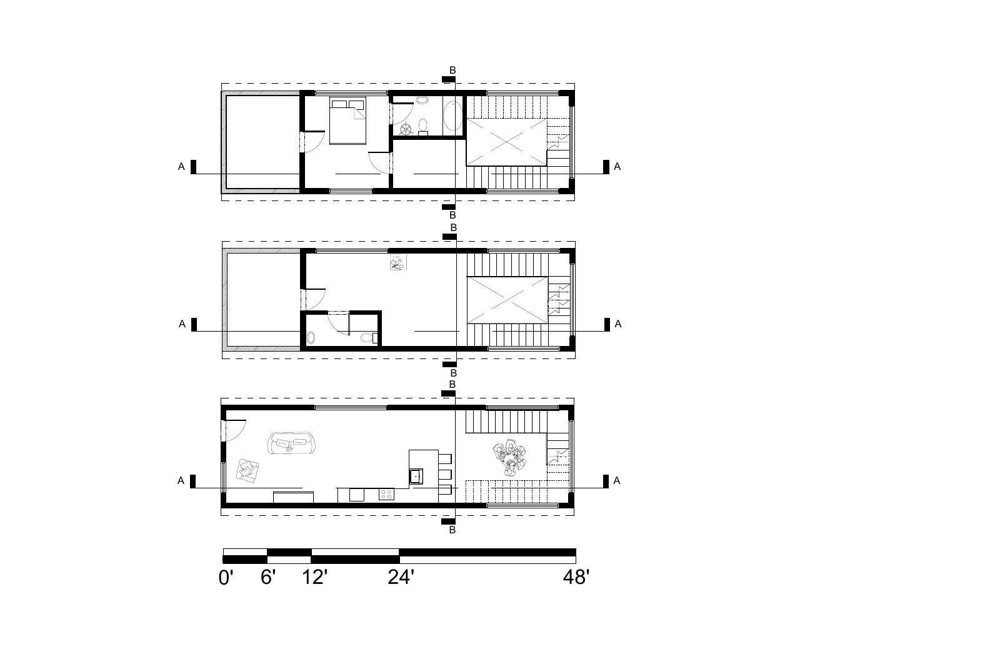
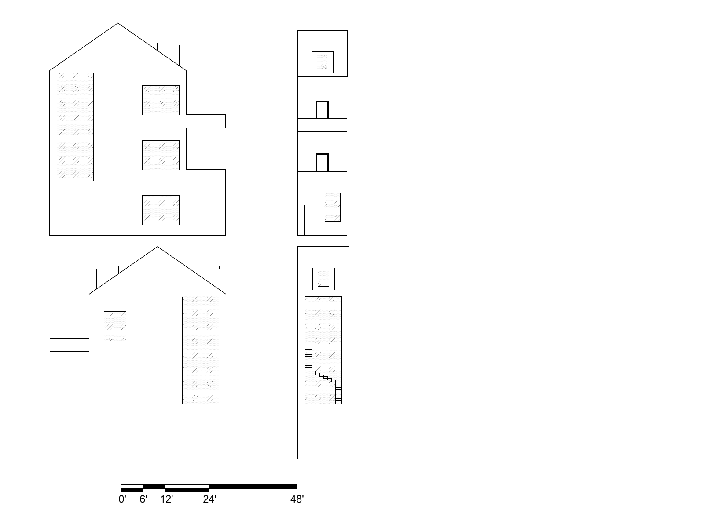
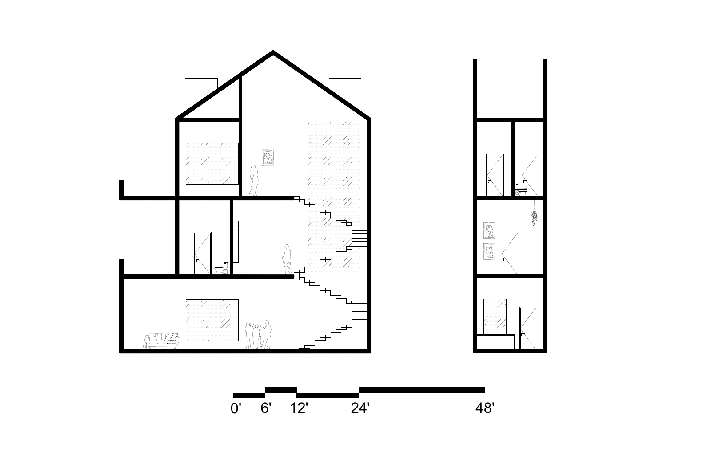

Jutaku House · Assignment title
Between House
Between House is a narrow, multilevel dwelling with an open stair volume, projecting terraces, and a pitched roof. Physical model studies and AutoCAD plans, elevations, and sections document its spatial organization.
View the drawings ↗Model studies



Architectural drawings
Floor plans
Open original PDF ↗ — Floor plans (new tab)

